시작 전에 갖출 것
제목은 '100% 자동화'지만, 영상이 실제로 보여 주는 건 Claude Code에 영상 도구 세 개를 붙여서 편집과 모션 그래픽을 맡기는 방법이에요. 발표자가 꼭 깔라고 꼽은 오픈소스는 Remotion, HyperFrames, OpenMontage예요.
아래 슬라이드가 세 도구를 한 줄씩 소개해요. 카드 아래 별 숫자는 GitHub 별 개수인데, 셋 다 6만 개를 넘어요. 가운데 '3개 = 영상 제작 세트'라는 말처럼 셋이 모여야 영상 하나가 나온다는 게 발표자의 설명이에요.
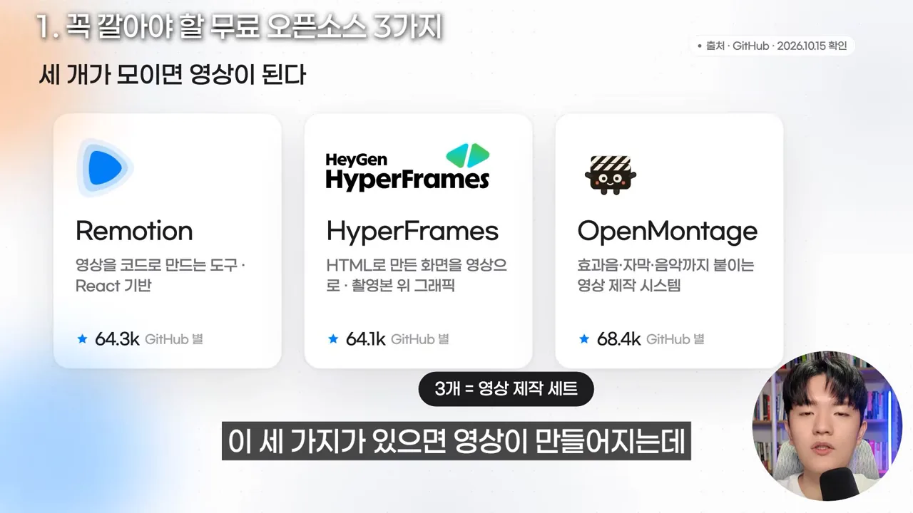
발표자는 이 내용을 정리한 설치 가이드북 PDF를 댓글로 나눠 줘요. 첫 장 표에는 도구마다 역할, GitHub 별, 사용 조건이 적혀 있어요. 오른쪽 '사용 조건' 칸을 보면 Remotion은 개인과 3인 이하 회사만 무료이고, HyperFrames는 회사·상업 이용도 무료예요. 표 아래에는 시작 전에 필요한 것으로 Claude Code(또는 Codex)와 Node.js 22 이상이 보여요.
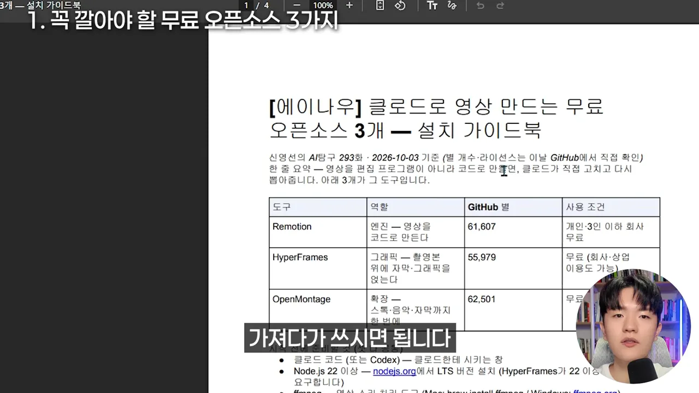
미리 깔아 둘 것
오픈소스 셋을 돌리려면 바탕이 몇 개 더 필요해요. 슬라이드의 준비물 목록에는 Claude Code와 요금제가 있고, 요금제 옆에는 '15만 원대 요금제 권장(개인 의견)'이라고 적혀 있어요. 발표자는 바로 다음 장에서 편집 한 편을 외주로 맡기면 10~20만 원이 든다는 숫자를 옆에 놓고 비교해요.
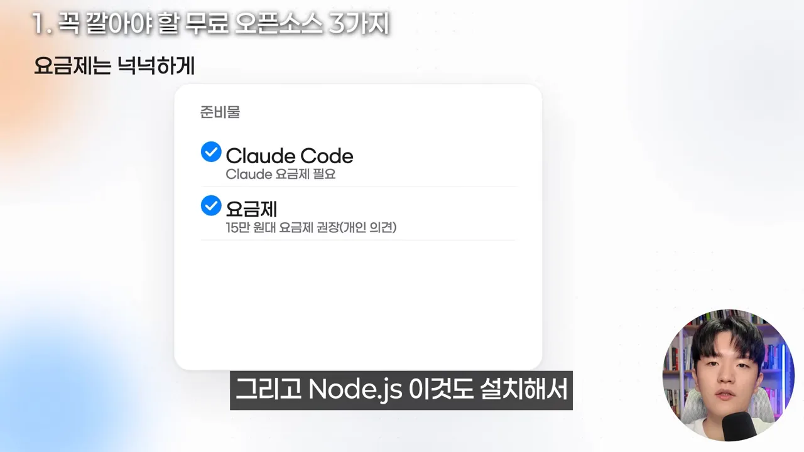
여기에 Node.js와 FFmpeg도 깔아야 해요. 발표자는 이걸 하나하나 찾아 깔지 말고, 가이드 문서를 Claude에게 주고 '이 문서에 있는 거 전부 설치하고 세팅해 줘'라고 시키는 게 편하다고 해요. 실제로 시키는 장면은 네 번째 섹션에서 나와요.
Remotion: 영상을 언어로 바꾸기
Remotion은 화면에 나오는 글자, 움직임, 타이밍을 전부 코드로 적는 도구예요. 아래 슬라이드 왼쪽 위 검은 상자가 그 코드예요. 'Title'이라는 부품에 글자('오늘의 핵심'), 시작 시점(from=30), 길이(durationInFrames=90), 튀는 정도(damping: 12)를 적었고, 아래 흰 상자가 렌더링한 결과예요.
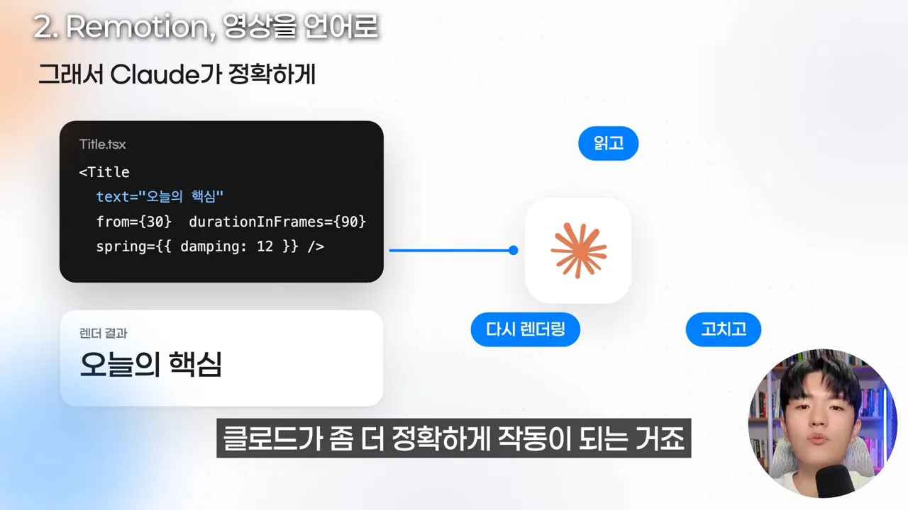
발표자가 가장 중요하다고 짚는 지점이 바로 이거예요. 영상을 언어로 바꿔 두면 Claude가 정확하게 다룰 수 있어요. 그런데 무엇을 언어로 바꿀지는 상황에 따라 달라요.
flowchart LR
Q{"평소에 만드는 영상 포맷이 있나요?"}
Q -->|있다| A["내 영상의 레이어를 언어로 쪼갠다
자막 · 강조 자막 · 컷 · 효과음 · 그래픽"]
Q -->|없다| B["레퍼런스 영상을 찾는다"]
B --> C["요소를 언어로 뽑아 온다
효과 · 편집 방식 · 자막 형태 · 화면 전환"]
A --> D["Claude에게 예시 자료로 한 번에 준다"]
C --> D
내 영상 포맷이 있을 때
회사나 개인 채널처럼 늘 만드는 포맷이 있다면, 그 영상의 모든 레이어를 하나하나 글로 적어 줘야 해요. 슬라이드 왼쪽의 자막, 강조자막, 컷, 효과음, 그래픽 다섯 줄이 각각 오른쪽 format.json의 한 줄로 이어져요. 예를 들어 자막은 'Paperlogy 60pt · 하단 중앙 · 흰 글자'처럼 글꼴, 크기, 위치, 색까지 적혀 있어요.
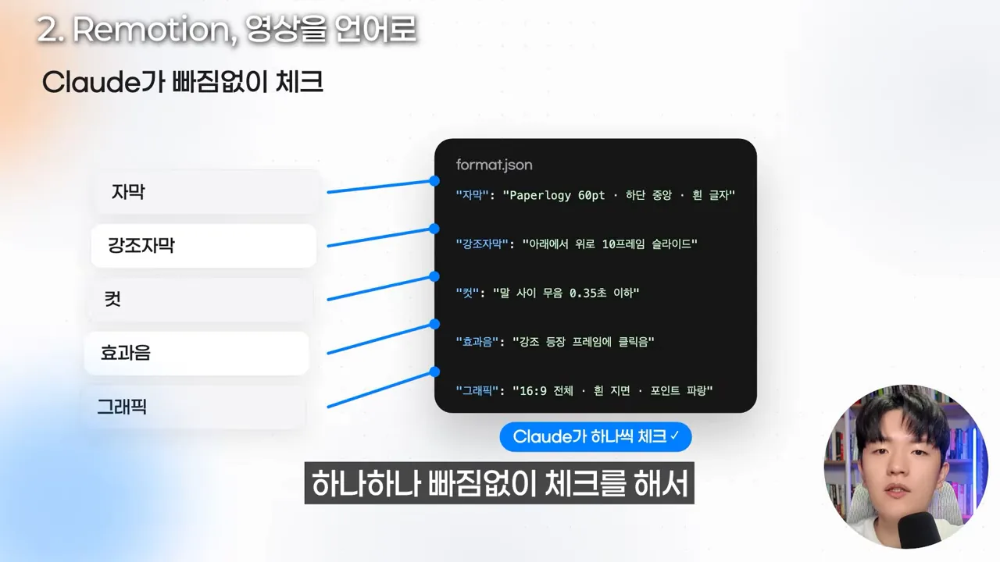
포맷이 없을 때
만들어 둔 영상이 없다면 레퍼런스부터 찾아요. 그다음 레퍼런스 영상에서 효과, 편집 방식, 자막 형태, 화면 전환을 뽑아 각각 언어로 정리해요. 슬라이드 오른쪽 네 칸 끝의 '{ - }' 표시가, 각 요소를 코드나 JSON(JavaScript Object Notation) 같은 글로 옮긴다는 뜻이에요.
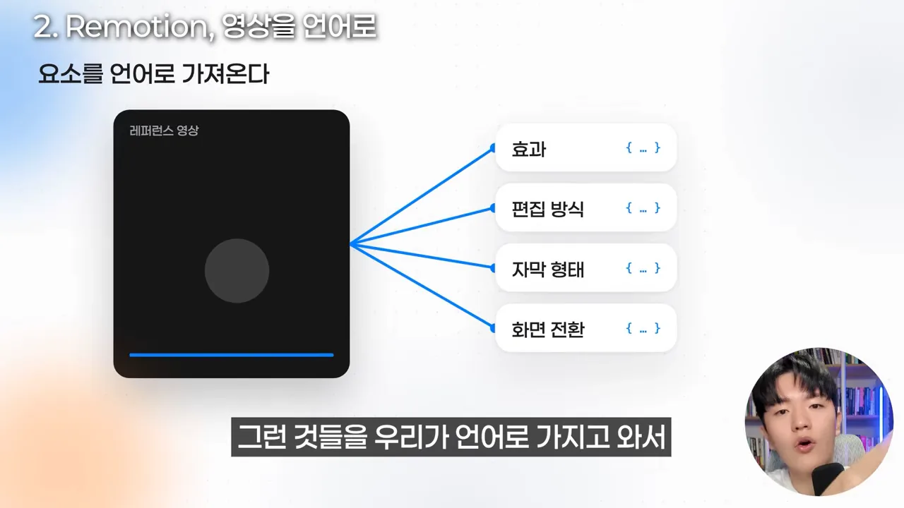
왜 굳이 이렇게 할까요? 다음 슬라이드가 답이에요. 왼쪽은 '이건 이렇게 해 줘, 저건 저렇게 바꿔 줘, 여기는 더 빠르게' 하고 명령을 줄줄이 내리는 방식이고, 오른쪽은 '레퍼런스.mp4 + 요소 정리'를 한 번에 주는 방식이에요. 두 상자 아래에 똑같이 '토큰'이라고 적혀 있는데, 발표자는 오른쪽이 토큰도 덜 쓰고 작업 과정도 훨씬 효율적이라고 해요.
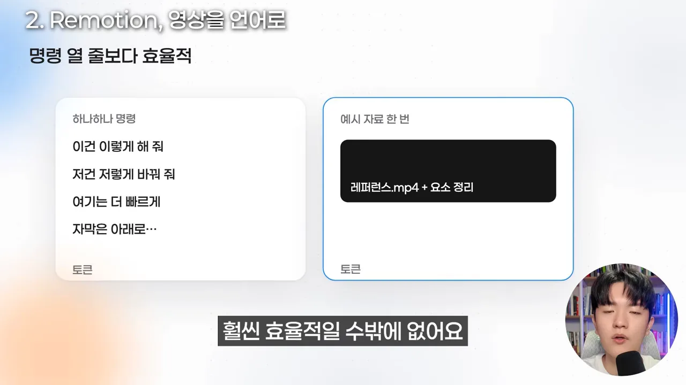
HyperFrames와 OpenMontage
HyperFrames는 홈페이지나 바이브 코딩으로 무언가 만들 때 쓰는 HTML과 CSS로 화면을 짜면, 그 화면을 그대로 MP4 영상으로 뽑아 주는 도구예요. 아래 슬라이드 왼쪽이 HyperFrames 소개 페이지, 오른쪽이 MP4로 나온 결과를 뜻하는 그림이에요.
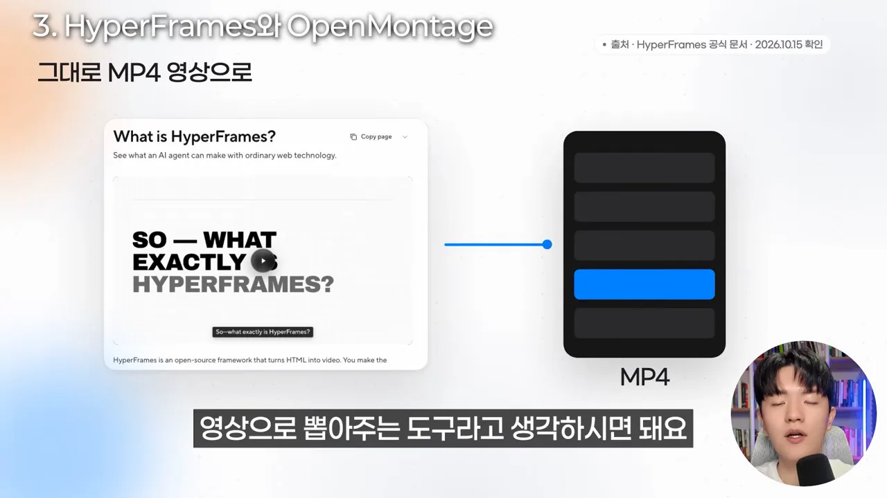
쓰임새는 내가 찍어 둔 영상 위에 무언가를 얹을 때예요. 슬라이드의 검은 화면이 '내가 찍은 촬영본'이고, 그 위에 왼쪽 아래 '자막', 오른쪽 아래 파란 '강조 그래픽', 가운데 큰 '10배' 숫자가 얹혀 있어요. 오른쪽에 적힌 '10초 안팎 도식'과 '움직이는 글자'를 만들고 싶을 때 꼭 써야 하는 도구라고 해요.
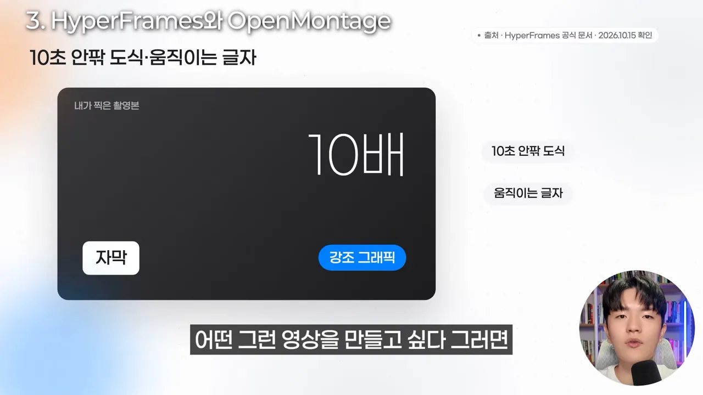
OpenMontage: 숏폼 제작 공장
OpenMontage는 제작 파이프라인 12종과 도구 100개가 들어 있는 오픈소스예요. 발표자는 이걸 '영상 제작 공장'이라고 불러요. 슬라이드 위 입력창에 'AI 영상 편집 자동화로 숏폼 만들어 줘' 한 줄을 넣으면, 아래 일곱 칸인 조사, 대본, 내레이션, 배경음악, 자막, 렌더, 품질 검수를 차례로 돌려 숏폼을 완성해요.
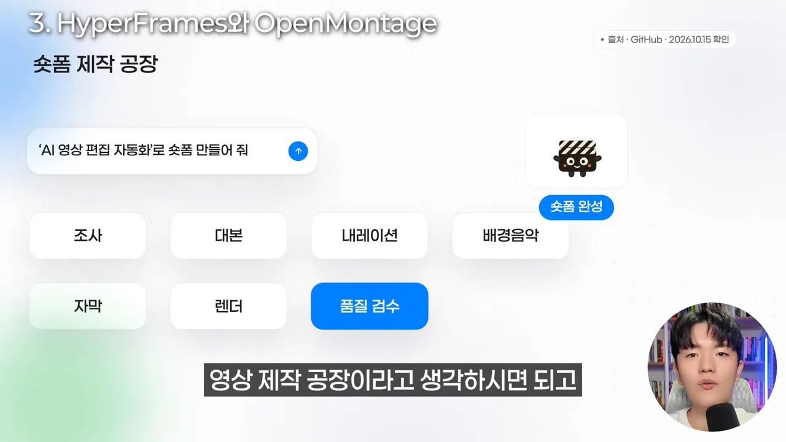
셋을 이으면
세 도구는 맡는 층이 달라요. 아래 슬라이드처럼 Remotion이 영상 코드를, HyperFrames가 자막 그래픽을, OpenMontage가 음악과 스톡 영상을 맡아 화살표로 이어져요. 이 흐름이 완성되면 Claude에게 말로만 시켜서 숏츠를 뽑을 수 있다는 게 발표자의 설명이에요.
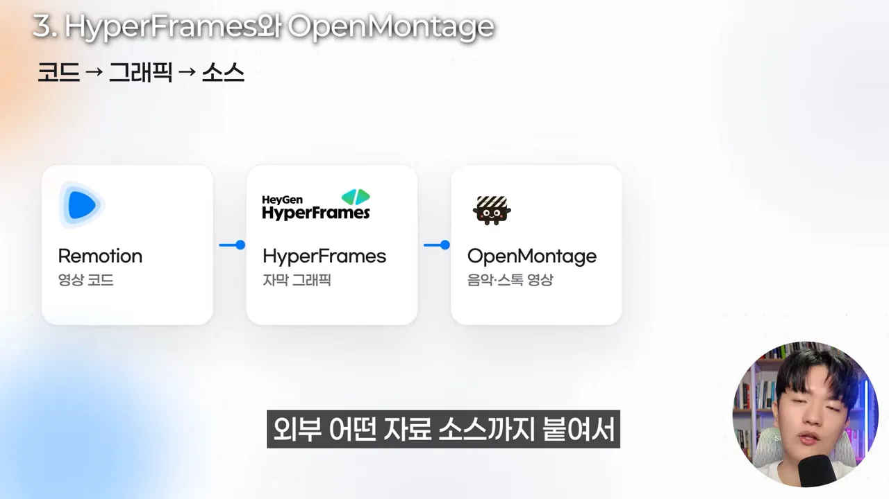
| 도구 | 맡는 일 | 언제 쓰나요 |
|---|---|---|
| Remotion | 글자·움직임·타이밍을 코드로 적어 영상을 만들어요 | Claude가 영상 자체를 읽고 고치게 하고 싶을 때 |
| HyperFrames | HTML·CSS 화면을 MP4로 뽑아요 | 촬영본 위에 자막, 숫자, 강조 그래픽을 얹을 때 |
| OpenMontage | 조사부터 품질 검수까지 이어 돌려요 | 주제 한 줄로 숏폼 한 편을 통째로 뽑을 때 |
PDF 하나로 한 번에 설치
도구를 하나씩 깔 수도 있어요. 가이드 PDF의 GitHub 링크를 누르면 저장소로 넘어가요. 아래 화면처럼 오른쪽 위 초록색 Code 버튼을 누르고, 펼쳐진 창에서 주소 옆 복사 버튼을 눌러요. 그 주소를 Claude에 붙여 넣고 '이거 설치해 줘'라고 하면 끝이에요.
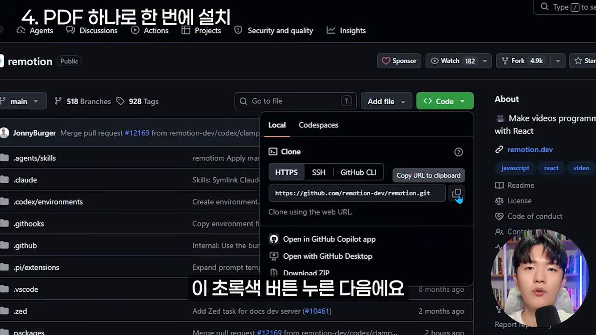
문제는 이렇게 하면 세 개를 따로따로 깔아야 하고, 딸려 오는 것도 많다는 거예요. 그래서 발표자는 PDF 하나로 한 번에 까는 방법을 보여 줘요.
- PDF를 Claude가 일하는 로컬 폴더에 미리 넣어 둬요 — 화면에서는 ai-ceo-os라는 폴더였어요. 대화창에 첨부하면 그걸 읽고 파악하는 데 또 토큰이 들기 때문이에요. 발표자는 이 영상에서는 귀찮다며 그냥 대화창에 넣었어요.
- '이 PDF 내용 확인해 봐'라고 시켜요 Claude가 PDF를 읽고 무엇을 깔아야 하는지, 지금 무엇이 깔려 있는지 알려 줘요
- 빠진 것을 한 번에 깔라고 말해요 — 발표자는 마이크로 'OpenMontage 설치해 줘, 그리고 나머지 설치하지 않은 것들도 한 번에 다 해 줘'라고 말했어요.
두 번째 단계에서 Claude가 답한 화면이에요. 위쪽 표는 PDF의 표를 옮긴 것으로, 이번에는 라이선스 칸에 OpenMontage의 AGPL(GNU Affero General Public License) 조건도 보여요. 아래 '설치 명령'에는 도구마다 깔 때 쓰는 명령이 정리돼 있어요. 맨 아래 두 줄이 지금 상태예요. Remotion 스킬과 hyperframes 스킬은 이미 깔려 있고 OpenMontage만 없다고 해요.
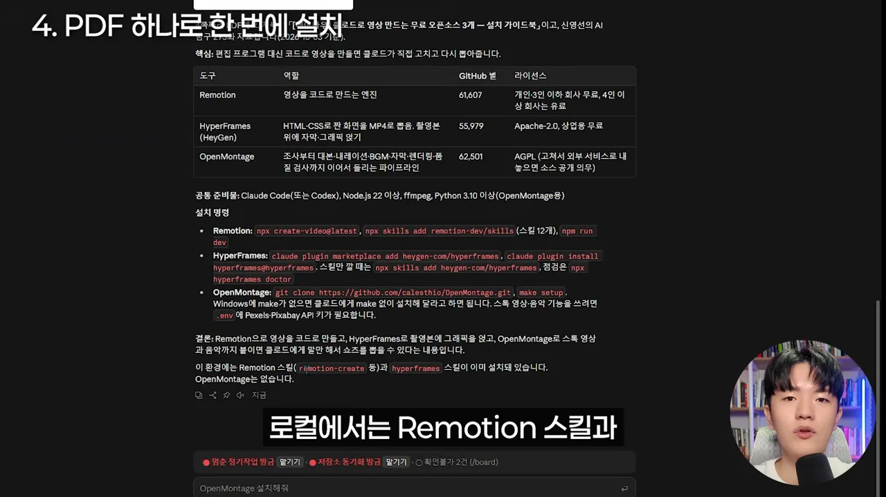
표 아래 '공통 준비물' 줄을 보면 Claude Code(또는 Codex), Node.js 22 이상, FFmpeg, 그리고 OpenMontage용 Python 3.10 이상이 적혀 있어요. 첫 섹션의 준비물 목록에 Python이 하나 더 붙은 셈이에요. 여기까지 하면 영상을 만들 도구 준비, 곧 1단계가 끝나요.
프롬프트 원칙보다 레퍼런스
도구를 깔았으면 이제 영상을 만들 차례예요. 많은 사람이 프롬프트가 중요하다고 말하지만, 발표자는 요즘 프롬프트 원칙을 그렇게 중요하게 보지 않아요. 아래 슬라이드의 '프롬프트 원칙 체크리스트' 네 줄(역할을 정해 준다, 출력 형식을 지정한다, 예시를 2개 넣는다, 제약 조건을 나열한다)에 모두 줄이 그어져 있어요.
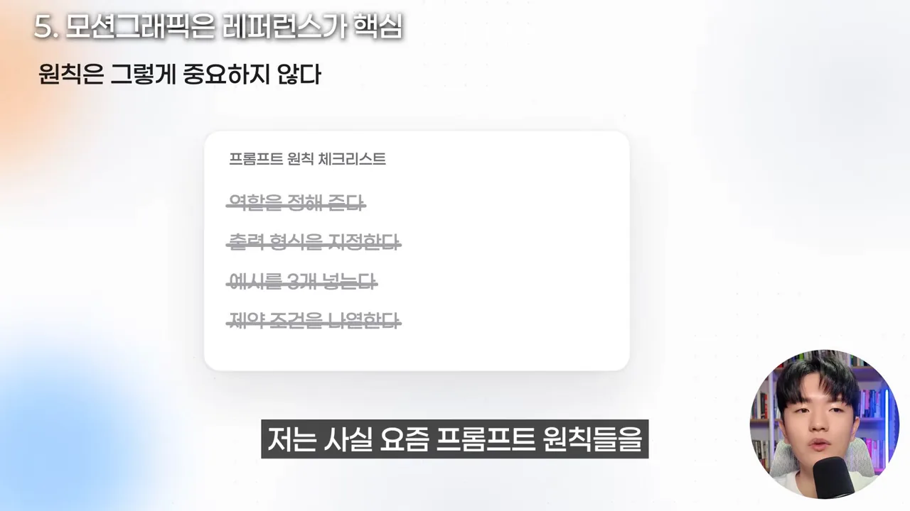
대신 내가 원하는 걸 명확하게 전하라고 해요. 다음 슬라이드의 '내가 원하는 것' 카드에 세 가지가 적혀 있어요. 어디에 쓸 영상인지, 어떤 분위기인지, 무엇이 꼭 나와야 하는지예요. 프롬프트는 그걸 전하는 방법 중 하나일 뿐이에요.
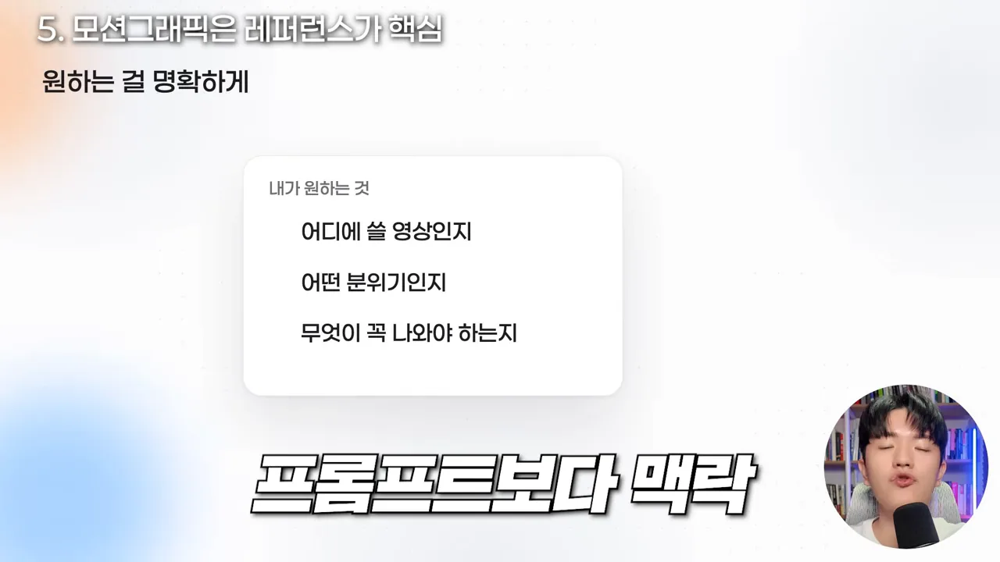
요즘은 타이핑 대신 마이크로 말해도 돼요. 발표자가 실제로 말한 요청은 이랬어요. 내 유튜브 채널 중간에 들어가는 인트로와, 마지막에 구독과 좋아요를 말하는 모션 그래픽을 만들고 싶다. 톤앤매너는 블랙 앤 화이트로 맞추고, 심플하지만 임팩트 있게.
그런데 발표자는 이것조차 추상적이라고 해요. 그래서 레퍼런스 영상을 콕 집어 주는 게 훨씬 도움이 돼요.
레퍼런스는 어디서 찾나요
발표자가 보여 준 곳은 Skillry라는 사이트예요. 화면 왼쪽 위에 'Browse 513 Opus 5.5 videos'라고 나오고, 아래로 모션 그래픽 카드가 이어져요. 카드마다 프롬프트를 복사해서 가져다 쓸 수 있어요. 마음에 드는 게 없으면 사이트 링크만 Claude에게 주고 '이 중에서 네가 보기에 가장 괜찮은 걸로 만들어 줘'라고 해도 돼요. 그 결과는 다음 섹션에서 나와요.
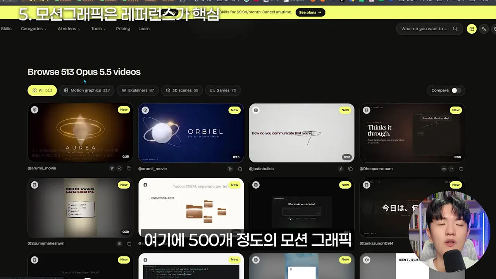
시안은 여러 개를 나란히
영상 끝 요약에서 발표자는 한 가지를 더 보태요. 모음 사이트에서 마음에 드는 두세 개를 골랐다면, 원하는 요소를 말로 덧붙여요. 슬라이드의 'Claude에게 말로' 카드처럼 '이런 비슷한 모션 그래픽인데, 이런 요소가 추가되고, 이런 디자인 요소와 효과로'라고 하는 거예요.
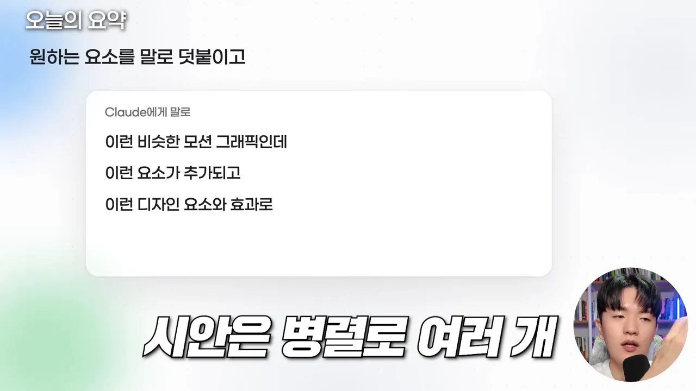
그리고 시안을 하나만 받지 말고 셋이나 넷을 동시에 받으라고 해요. 아래 슬라이드처럼 시안 A부터 E까지 옆으로 늘어놓고, 그 아래 '병렬로 늘려 가며 고르기'라고 적혀 있어요. 프롬프트를 하나 써서 만들어 보고, 별로면 또 바꾸는 것보다 이쪽이 훨씬 빠르다는 게 발표자의 경험이에요.
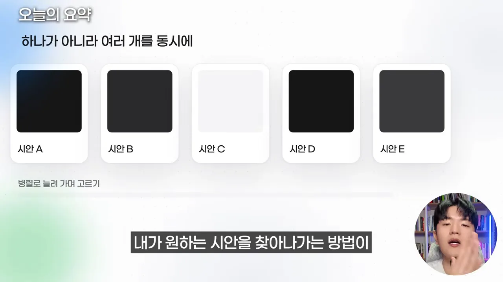
직접 만들어 본 결과와 한계
발표자가 테스트하며 처음 만든 영상은 'AI 시대에도 차이는 실행이다'라는 문구 아래 인물 두 명이 사다리를 오르는 장면이었어요. 원래는 인물이 걸어서 올라가게 하고 싶었대요. 화질과 선명도는 좋았지만, 올라가는 동작만큼은 어색하게 나왔어요.
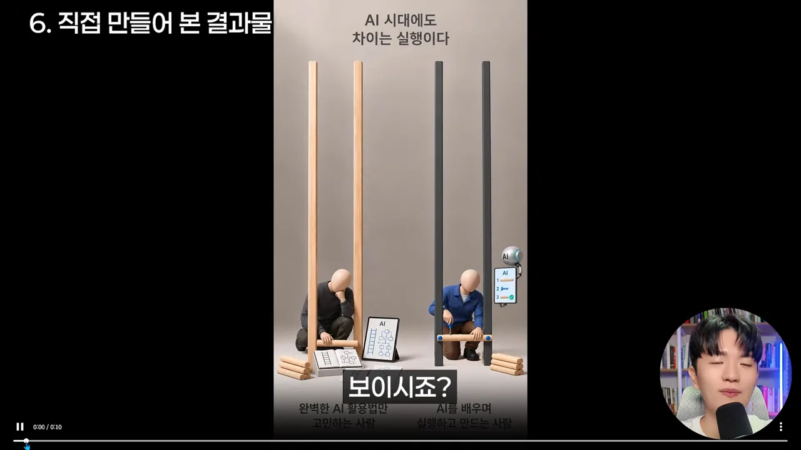
여기서 발표자가 내린 결론이 이 영상에서 가장 현실적인 대목이에요. 이 도구들은 창작이나 제작이 아니라 편집의 관점으로 봐야 해요.
| 잘하는 것 | 아직 어려운 것 |
|---|---|
| 영상을 편집하고 자막을 붙이고 컷을 나누기 | 인물이 움직이는 장면 |
| 단순한 글자, 차오르는 그래프 같은 모션 | 특정 동작이나 과한 액션 |
| 단순한 도형이 움직이고 부딪히고 바뀌는 정도 | 애니메이션이나 드라마 상황극 같은 콘텐츠 |
말로만 시킨 인트로와 아웃트로
앞 섹션에서 말로 시킨 요청의 결과는 HyperFrames로 나왔어요. 아래는 HyperFrames 편집 화면에서 연 중간 인트로예요. 검은 바탕에 작은 'CHAPTER 01'과 큰 '핵심 정리' 제목, 그 아래 밑줄이 들어간 흑백 화면이에요.
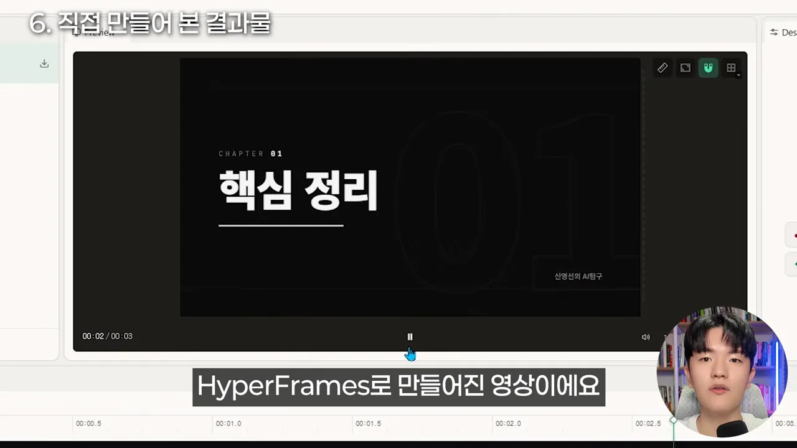
마무리 아웃트로는 '도움이 됐다면, 구독과 좋아요' 문구 아래 채널 이름과 좋아요·구독중·알림 버튼을 늘어놓은 화면이에요. 아래쪽에 타임라인이 보이는데, 여기서 렌더링을 시키면 이게 영상 파일이 돼요.
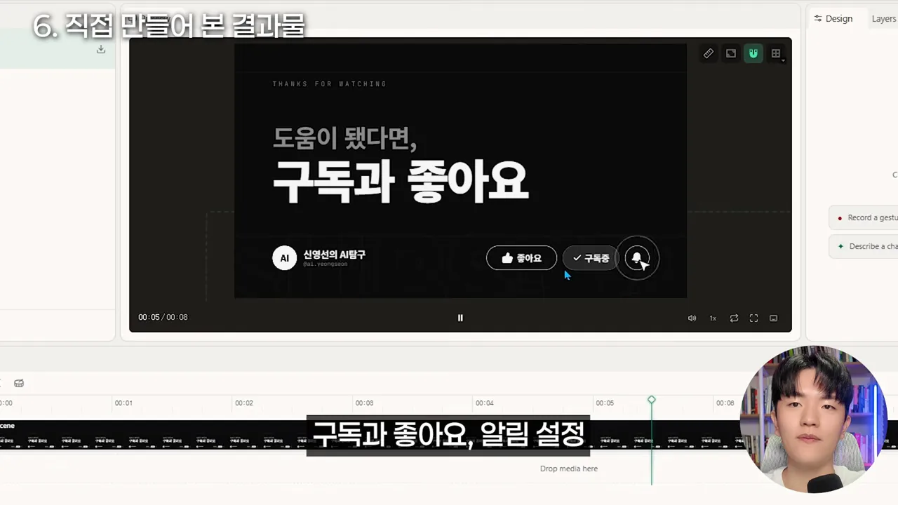
레퍼런스 링크를 줬더니
이번에는 Skillry 링크를 함께 줬어요. 아래 입력창 맨 앞에 skillry.dev 주소가 있고, 그 뒤로 '이 링크에 있는 모션 그래픽이나 다양한 레퍼런스 중에서 우리 컨셉과 내가 말한 의도에 가장 맞는 걸 참고해서, 우리만의 영상으로 재가공해 줘'라는 요청이 이어져요. 입력창 위에는 앞서 만든 인트로와 아웃트로 파일 두 개(index.html)가 고쳐졌다는 표시도 보여요.
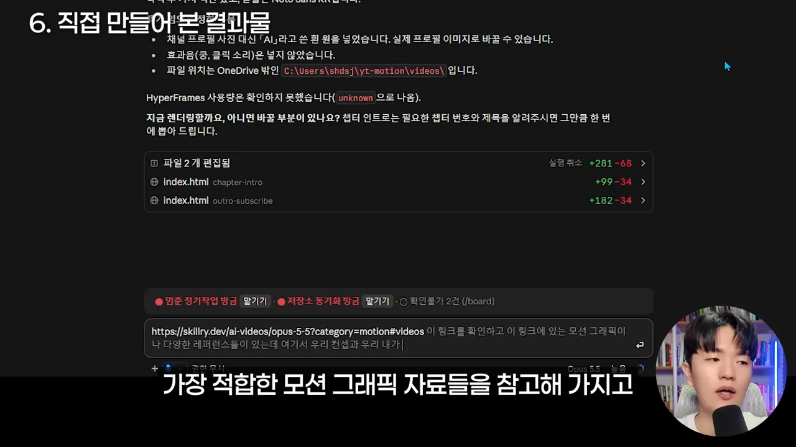
Claude는 흑백 미니멀을 기준으로 후보 네 개를 골랐고, 영상 두 개를 만들었어요. 발표자는 첫 결과보다 퀄리티가 훨씬 좋다고 평가해요. 같은 도구, 같은 요청이었는데 레퍼런스를 줬는지만 달랐어요.
세 가지가 맞물려야 해요
발표자는 결과를 보고 세 가지를 정리해요. 아래 슬라이드의 세 카드예요. 1번 명확한 레퍼런스, 2번 Claude가 읽는 언어·프롬프트, 3번 빠짐없는 세분화예요. 영상이 Claude가 해석할 수 있는 언어로 낱낱이 정리돼 있어야, 가져오고 싶은 요소가 결과에 반영된다는 거예요.
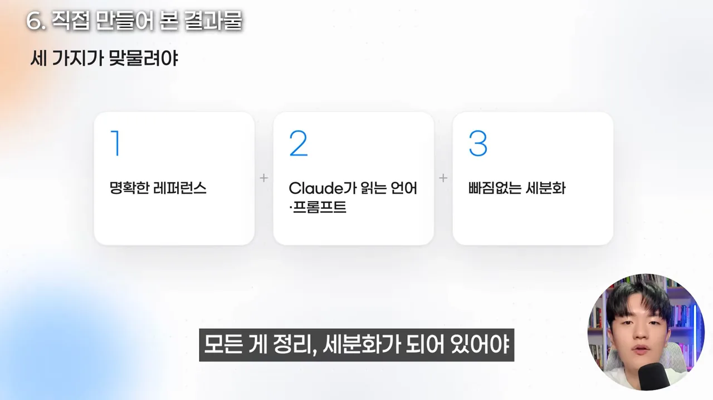
발표자의 팀은 이미 쌓아 둔 자기 영상을 예시 자료로 줘요. 그리고 '효과를 최대한 후킹되고 지루함이 느껴지지 않도록 풍성하게 넣어 줘'라고 시켰어요. 아래 화면 위쪽이 그렇게 나온 세로 미리보기('편집비 0원')이고, 그 아래 Claude의 보고가 있어요. 효과음을 83번에서 229번(초당 5.3번)으로 늘렸고, '감독관'이 효과음 100점으로 승인했다고 적혀 있어요. 맨 아래 표에는 첫 0.1초, 도구 소개 3번처럼 자리마다 어떤 소리를 넣었는지가 정리돼 있어요.
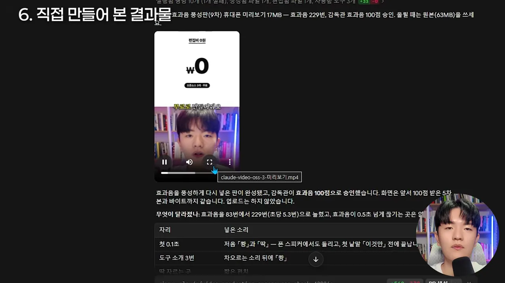
이렇게 나온 영상은 캡컷으로 불러와 세부만 다듬고 올리면 된다고 해요. 제목은 '100% 자동화'지만, 발표자도 마지막 손질은 사람이 하는 흐름으로 보여 줘요.
영상 끝 요약 슬라이드는 이 과정을 세 단계로 다시 묶어요. 1번 오픈소스 3개 설치, 2번 레퍼런스 영상 준비(반드시 있어야 하는 재료), 3번 언어로 치환(JSON·HTML·특정 언어로 낱낱이)이에요. 오른쪽 reference.json에는 자막, 전환, 효과음, 색, 길이를 한 줄씩 적은 예가 있어요.
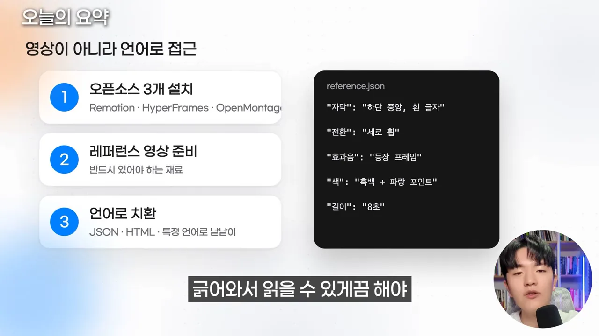